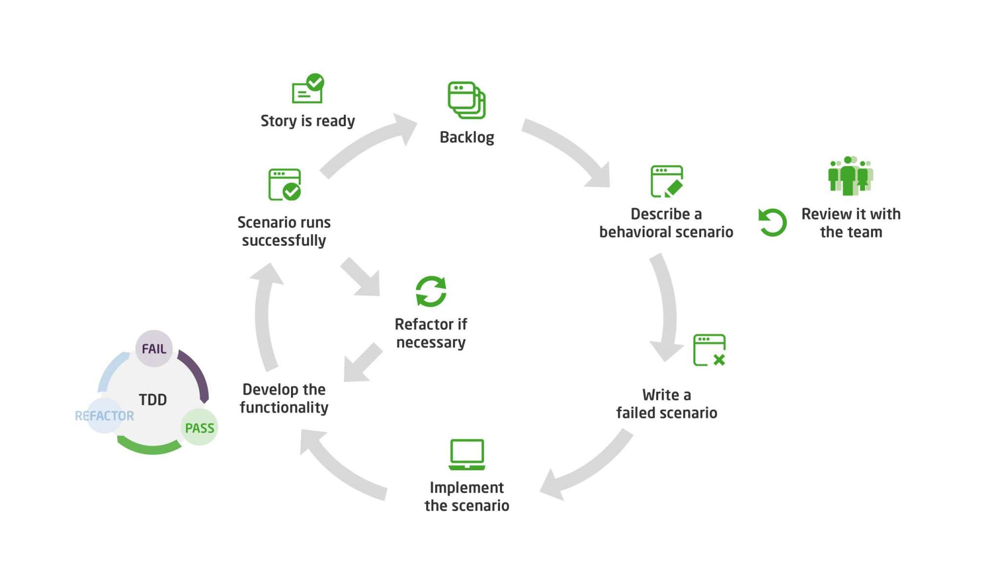

Behavior Driven Development

Behavior Driven Development(BDD) on tarkvaraarenduse lähenemisviis, mis edendab koostööd arendajate, kvaliteedi tagamise ekspertide ja klientide esindajate vahel.
See rõhutab vestluse ja konkreetsete näidete kasutamist, et luua ühine arusaam sellest, kuidas rakendus peaks käituma.
Test Driven Developmentist (TDD) tulenev BDD integreerib domeenipõhise disaini ning objektorienteeritud analüüsi ja disaini põhimõtted.
See julgustab meeskondi kasutama spetsiaalseid tarkvaratööriistu, mis automatiseerivad testimisprotsesse, hõlbustades suhtlust lihtsa domeenispetsiifilise keele (DSL) kaudu loomuliku keele konstruktsioonidega.
BDD on eriti tõhus keerukate äriprobleemide lahendamisel ja seda kasutatakse sageli koos agiilsete metoodikatega.
BDD (Käitumispõhine Arendus) Eelised:
- Tugev koostöö: Tooteomanikel, arendajatel ja testijatel on sügav ülevaade projekti edenemisest tänu jagatud keelele.
- Lühem õppimiskurv: BDD-d selgitatakse lihtsas keeles, mis vähendab õppimiseks kuluvat aega.
- Kõrge nähtavus: Mittetehniline protsess võimaldab laiema publikuni jõuda.
- Kiired iteratsioonid: Võimaldab kiiresti reageerida kasutajatelt saadud tagasisidele.
- BDD Test Suite: Annab meeskonnale kindlustunde testkomplekti kujul.
- Likvideerib jäätmed: Vähendab valesti tõlgendatud nõuete ja aktsepteerimiskriteeriumide tõttu ümbertegemist.
- Keskendub kasutajate vajadustele: Täidab kasutajate vajadusi tarkvaraarenduse kaudu.
- Vastab ärieesmärkidele: Jälgib arendust tegelike ärieesmärkideni.
BDD (Käitumispõhine Arendus) Puudused:
- Eelnev kokkupuude TDD-kontseptsioonidega: BDD-s töötamiseks on vajalik eelnev kokkupuude TDD-kontseptsioonidega.
- Ühilduvus: Käitumisest lähtuv arendus ei pruugi ühilduda juga lähenemisviisiga.
- Tehnilised teadmised: BDD-d kasutavatel testijatel peavad olema piisavad tehnilised teadmised.
- Täpsed nõuded: BDD ei pruugi olla tõhus, kui nõuded pole täpselt määratletud.